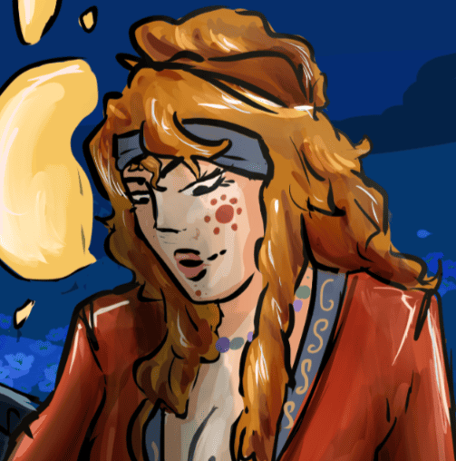

Maliha
Maliha
Nos malheurs et notre détermination nous ont donnés les plus belles fleurs du jardins.
Histoire
Le clan Toréador est fier des artistes qui peuplent son Jardin, égayant ses couloirs de musique et de danse. Ils s'y complaisent entre les murs, mais n'y restent souvent que le temps de trouver l'inspiration ou des financements. Maliha, elle, appartient plutot à une seconde catégorie : celle des arts pratiques.
Sa première apparition se fait en 1890, ou elle se propose pour l’organisation du gala du solstice d’hiver. Elle ferra parti d’un groupe de quatre couturiers qui pendant trois semaines vinrent broder à la main une nappe de vingt-cinq mètre de long retraçant l’histoire de Soteria. Sa dévotion à la tache lui ouvra de nombreuses portes, et elle eu l’honneur de pouvoir organiser la composition florale de l’évènement, la dernière de l’année avant l’hiver, symbolisant le dernier rêve de Soteria.
Sa passion et sa diligeance en font une des préférés de Calliope, la gardienne du jardin. Elle trouve rapidement une place dans son entourage en tant que goule, et y parfaira les talents que l’on attends d’un membre du culte ; la couture, la botanique, la théologie, les bases musicales et le chant.
Rejoindre le monde de la nuit
C’est en 1902, que le jardin obtient de Nafissa un droit d’étreinte, que Calliope donne a Maliha. Celle dernière ne rejoindra pas de coterie et restera entre les murs, montrant rapidement un certain désintérêt pour la politique et la vie vampirique.
Après l'incendie de 1922, Calliope se retire de son rôle de gardienne et le confie à son infante. Plus spécialisée qu'elle en botanique, Maliha entreprend alors de restaurer le Jardin et de réparer les dégâts qu'il a subis.
Relations
Lignée

Calliope- Leur relation s'est dégradée rapidement, surtout quand Maliha découvrit le gout pour la controverse de sa sire. Ne souhaitant pas s'y associer, elle s'est socialement distancée.
Amis
 Kaadir
Kaadir - Il est son protégé, et elle l’a accompagné dans ses premiers pas dans la vie descendante, n’ayant tout deux pas eu de coterie.
- Aylin
- La seconde membre du culte de Soteria, elles peuvent philosopher pendant des heures à son sujet.
Professionnels
 Eleni
Eleni - Celle ci travaille au jardin afin d'étudier, Maliha semble distante à son sujet, mais la laisse aller et venir.
- Veronika
- Sa mentor; une toréador de passage dans le jardin qui lui à enseigné beaucoup sur la botanique et a participé au renouveau du jardin après l’incendie.
Trivia
- Nebetta est une de sa plus grande mécène, et la contacte pour décorer l’Elysium.
- Porte une légère odeur de lilas
- Est spécialisé dans la composition florale, la broderie et la couture de drapés.